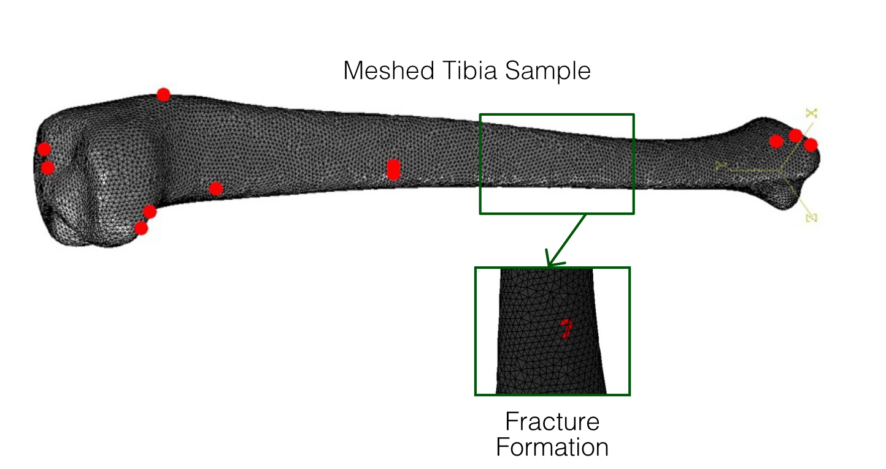

Stress Fracture Risk Prediction Tool

Stress fractures develop when microdamage accumulates faster than the bone's natural repair process can manage. Although these injuries are uncommon in the general population (occurring in less than 4% of people), they are frequently seen among athletes and military personnel [1, 2]. Specifically, stress fractures affect up to 64% of military recruits and 40% of athletes [3, 4]. Moreover, this risk appears disproportionately high in females, with reported instances being nearly double that of males [5]. This situation is particularly concerning because the risk increases even with relatively low levels of activity, such as running twice a week [5]. Consequently, developing a reliable tool to predict stress fracture risk is clearly necessary for public health.
The majority of these fractures occur in the lower extremities, accounting for about 80% of all cases [6]. Within the lower extremities, the tibia is the most common site, responsible for 50% of all such stress fractures [3]. Despite this high incidence rate, the precise mechanical causes of tibial stress fractures remain poorly understood.
Current studies generally attribute these fractures to several factors: bone structure, sex, previous injuries, and external forces like training demands and movement patterns [3, 7, 8, 9]. However, existing research tends to study these risk factors in isolation. Consequently, there is a significant gap in the literature regarding an integrated model that combines all these elements to predict overall stress fracture risk. Furthermore, much of the current research relies on retrospective analysis, which limits its ability to prevent fractures before they happen. Additionally, biomechanical considerations are often omitted from existing work.
To address these limitations, this research focuses on creating a comprehensive prediction tool for stress fractures. This tool will integrate multiple factors, including the specific anatomy of the tibia, biomechanics, and loading conditions associated with activities like walking or running. Specifically, geometrical features extracted from various tibial scans will feed into a machine learning model designed to forecast the risk level. Preliminary findings suggest that tibiae that are shorter and narrower may be more susceptible to fractures, aligning with existing literature regarding higher stress levels [8].
In summary, this study aims to build an integrated prediction tool by combining tibial anatomy, biomechanics, and activity-specific loading data. By achieving this integration, the research expects to provide a more complete picture of the risk factors for tibial stress fractures. Ultimately, this improved understanding should lead to better prevention strategies and improved health outcomes for both athletes and military personnel who are at risk.
References
- https://pubmed.ncbi.nlm.nih.gov/23825184/
- https://pubmed.ncbi.nlm.nih.gov/16939407/
- https://pmc.ncbi.nlm.nih.gov/articles/PMC9599044/
- https://pubmed.ncbi.nlm.nih.gov/31213104/
- https://drum.lib.umd.edu/items/2bdf2f82-0496-49eb-8531-4aff976530f4
- https://pubmed.ncbi.nlm.nih.gov/25848327/
- https://pubmed.ncbi.nlm.nih.gov/25397605/
- https://pubmed.ncbi.nlm.nih.gov/36811007/
- https://www.tandfonline.com/doi/abs/10.3810/psm.2014.11.2095